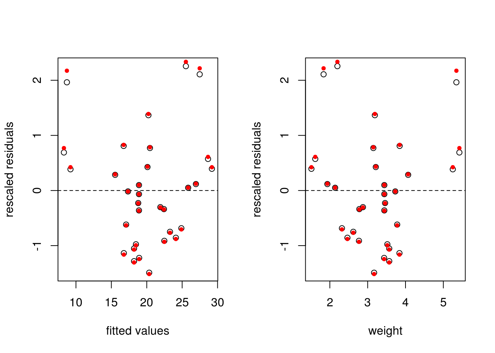
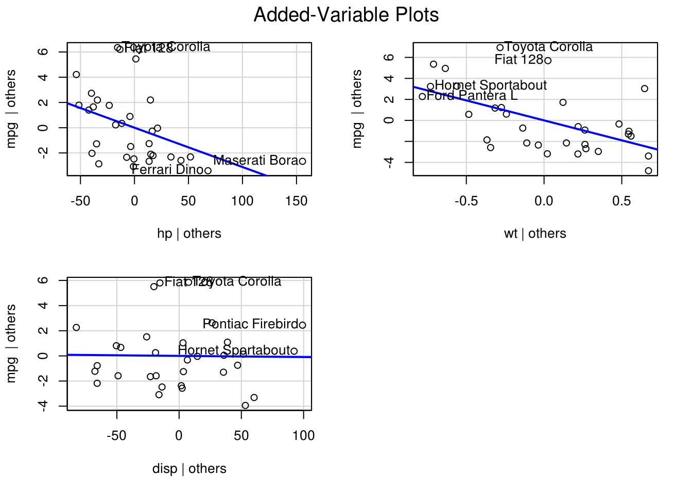
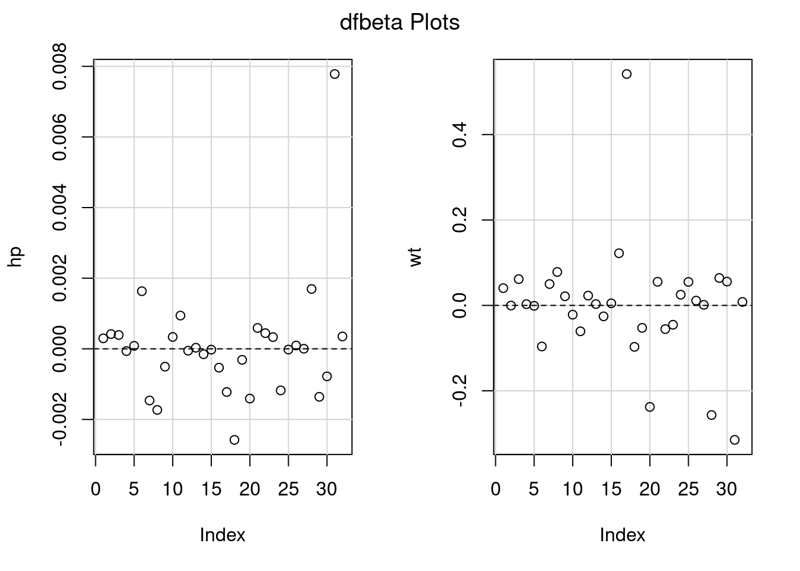
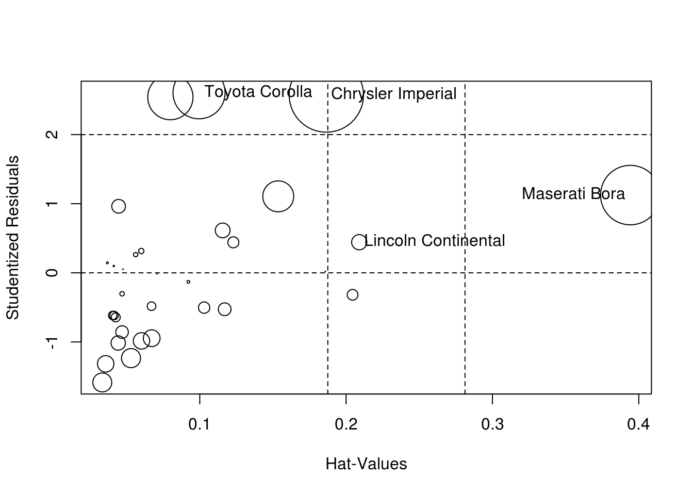

4.3 Diagnostic plots
If the underlying model is truly linear, a plot of \({\boldsymbol{e}}\) against \(\hat{{\boldsymbol{y}}}\), should be flat because the two are by construction orthogonal. In practice, we rescale \({\boldsymbol{e}}\) by \(s\) to ensure that the variance is closer to unity. If there are omitted higher-order interactions, these will show up in such a plot.
In practice, there is often little difference between the rescaled residuals \({\boldsymbol{e}}/s\) and the internally studentized residuals \({\boldsymbol{r}}\). The former are orthogonal to \(\hat{{\boldsymbol{y}}}\), while the latter have equal variance.
par(mfrow = c(1, 2)) #split the graphic window (1 row, 2 columns)
#Fitted values vs raw residuals/s2
plot(y = e/sqrt(s2), x = yhat,
xlab = "fitted values", ylab = "rescaled residuals"); abline(h = 0, lty = 2)
#Fitted values vs internally studentized residuals
points(y = r, x = yhat, pch = 20, col = 2)
#Regressor weight vs residuals
plot(y = e/sqrt(s2), x = X[,2], xlab = "weight",
ylab = "rescaled residuals"); abline(h = 0, lty = 2)
points(y = r, x = mtcars$wt, pch = 20, col = 2)
#graphics.off()
par(mfrow = c(1, 1))An alternative is residualPlot(lm(mpg ~ hp + wt, data = mtcars)), which adds the line for a quadratic regression of \(\hat{{\boldsymbol{y}}}\) against standardized residuals.
4.3.1 Added-variable plots
We can assess graphically whether a regressor should be included or not in the model. If the omitted regressor \(\mathbf{X}_2\) is redundant, its coefficient should be zero and we can project onto the orthogonal complement of the remaining regressors \({\mathbf{M}}_{{\mathbf{X}}_1}\) and the response to get the regression FWL for \({\boldsymbol{\beta}}_2\). The relationship between the two should have zero slope. The package car has a function avPlot.
In the regression of fuel consumption as a function of weight, we have not included the potentially important regressor hp, which measures the power of the engine. The added variable plot shows that it is an important explanatory variable. In contrast, the displacement disp is either uncorrelated with mpg or its effect is already explained by wt and hp.
#install.packages("car")
library(car)## Loading required package: carDatacar::avPlots(model = lm(mpg ~ hp + wt + disp, data = mtcars))
4.3.2 Diagnostic of heteroscedasticity
Unequal variance will often show up in time series. For example, many economic models postulate exponential growth, but this effect can appear linear at a small scale. However, the variance will not be constant and typically increase with the level of the observations. If there are factors, these may have different variances. A simple boxplot of the fitted values against the factor can flag heteroscedasticity.
4.3.3 Outliers
If an outlier is present and it has high leverage, it will draw the regression line towards itself. One way of assessing this (assuming there is a single such point) is to compute \({\hat{\boldsymbol{\beta}}}\) by fitting the model to all but the observation \(y_i\). The difference between this estimate \({\hat{\boldsymbol{\beta}}}_{-i}\) and \({\hat{\boldsymbol{\beta}}}\) is called difference of betas, or dfbeta. We can compute the effect of the deletion efficiently (details later on this) and similarly rescale the estimates to get a standardized difference.
We can also look at the Cook’s distance, the leverage values and the externally studentized residuals. These are often combined in a bubble pplot in which the radius of the circle is proportional to Cook’s distance, with the leverage on the \(x\)-axis and the value of the externally studentized residuals \({\boldsymbol{t}}\) on the \(y\)-axis.
dfbetaPlots(model = lm(mpg ~ hp + wt, data = mtcars))
influencePlot(model = lm(mpg ~ hp + wt, data = mtcars))
## StudRes Hat CookD
## Lincoln Continental 0.4434296 0.20897838 0.0178091
## Chrysler Imperial 2.5724776 0.18648721 0.4236109
## Toyota Corolla 2.6051516 0.09950335 0.2083933
## Maserati Bora 1.1250084 0.39420816 0.2720397